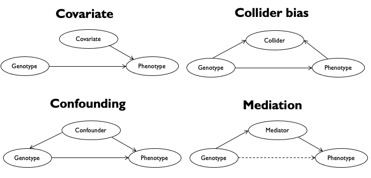
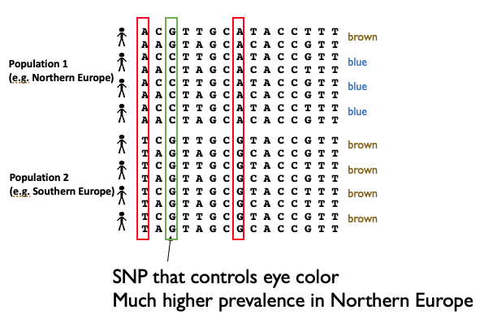
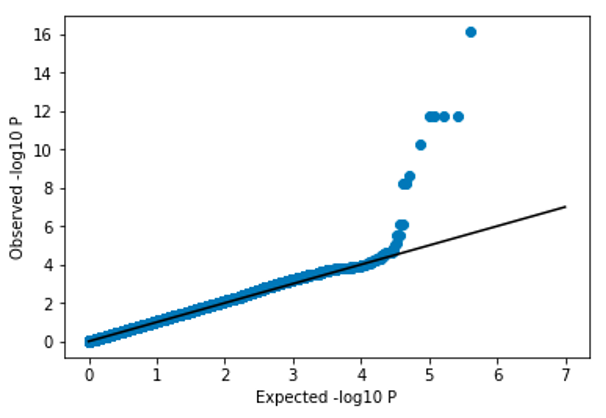

7.3 Confounding factors in GWAS#
In GWAS, our main goal is to determine the association between genotypes (\(X\)) and phenotypes (\(Y\)). However, there may be other factors at play that influence phenotypes (and in some cases, genotypes). These include things like:
Ancestry
Diet
Environment
Sex
Genotyping batch effects.
Below shows different ways these additional factors might be related to our genotypes and phenotypes.

In some cases if we do not account for these additional factors, our GWAS results might be misleading. For example:
A covariate that contributes substantial variation to the phenotype (such as sex, or medication use) can mask a true association between genotype and phenotype, resulting in false negatives.
A confounding factor that is correlated with both the genotypes and phenotypes can introduce bias leading to false positive associations.
While there can be many types of confounding factors, we will focus on confounding from ancestry below.
7.2.1 Ancestry can be a confounding factor in GWAS#
A confounding factor is something that influences both the \(X\) (genotypes) and \(Y\) (phenotypes) or our association analysis. Ancestry is an example of this:
One’s ancestry influences their genotypes. Recall in global ancestry analysis we could use SNP genotypes to predict the recent geographical location of someone’s ancestros
Ancestry can also influence phenotypes. This may be through genetic effects (including by other SNPs or genetic variants besides the one we are testing). It could also be by shared environmental effects. For example, individuals of similar ancestry might eat similar foods, eat in similar environments, etc.
We will use a toy example of eye color to illustrate how ancestry confounding could affect our GWAS. Consider we are doing a GWAS for blue eye color, which happens to be more prevalent in Northern vs. Southern Europeans. However, Northern and Southern Europeans will also have a lot of other genetic variants that differ, either from new mutations that have arisen since the populations split, or simply by drift, which can result in different allele frequencies in the different groups.

Besides the true SNP responsible for blue eye color, if we did a GWAS on this dataset, we’d also pick up a lot of other SNPs as significant, just because they happen to be associated with whether someone has more Northern vs. Southern European ancestry. Therefore, this confounding factor is going to result in many false positives.
We can visualize the results of a GWAS affected by confounding using a QQ plot:

Note, the p-values are far above the diagonal. We expect most SNPs would not be associated with eye color, and therefore would expect most of the points of the QQ plot to be along the \(x=y\) diagonal. In this scenario, where the p-values are all substantially stronger than expected, we refer to the p-values as being inflated. Inflated p-values is usually a sign that we need to take some additional steps to control for confounding factors in our analysis.
7.2.3 Controlling for confounding - take 1#
One way we could control for this could be by adding a covariate to our regression analysis. For example, consider that we were doing a GWAS for height and included both European and African individuals. We could add a covariate coding 0=African, 1=European, to our regression analysis, e.g.:
where \(C_k\) is the \(k\)th covariate and \(\gamma_{kj}\) is the (unknown) effect size for the covariate in the model for SNP \(j\).
While this will help control for some confounding, there are some important limitations:
We might not have self-reported ancestry for the individuals are are analyzing
Including a categorical covariate falsely assumes that individuals can be clustered into predefined distinct clusters.
This also only captures high-level population structure. For example, variation with Europeans, or within Africans, would not be accounted for.
7.2.4 Controlling for confounding - take 2#
An alternative, widely used strategies, is to instead use a quantitative definition of ancestry as covariates in our analysis. Recall, in our ancestry module we used principal components analysis on genotype matrices to “project” each sample along top principal components (PCs). These projections actually give us a (still imperfect) quantitative definition we can use here.
Let \(v_k=\{v_{1k}, v_{2k}, ... v_{nk}\}\) be the projection of the \(n\) samples along PC \(k\). We can now use these as covariates in our GWAS with the following model:
where \(PC_k\) is the projection of samples along PC \(k\) and \(\gamma_{kj}\) is the effect size for PC \(k\) in the model for SNP \(j\).
Note, an important consideration is how many PCs to include as covariates? Typically, around 10-20 PCs are included. There are tradeoffs to consider when choosing the number of PCs:
Including too few will result in a failure to fully account for confounding, and p-values for the SNP effect may still be inflated.
Including too many will reduce power, mostly because the number of parameters in the model increases.
After properly controlling for confounding, the p-values should become more well-calibrated:

7.2.2 Controlling for confounding - take 3#
We introduce a third method here, genomic control, which is no longer widely used to control for confounding. It is however still used in some cases to measure the degree of confounding remaining in the data.
The idea of genomic control is to compute a statistic, \(\lambda_{GC}\), which measures the degree of confounding. Intuitively, a \(\lambda_{GC}\) value close to 1 means the no confounding (most p-values follow the null expectation), whereas a higher value indicates confounding.
The steps to compute it and adjust statistics are as follows:
For each SNP, compute the Armitage trend statistic: \(A_j = N\beta_j^2\). Here \(N\) is the sample size and \(\beta_j\) is the effect size for SNP \(j\). (This value turns out to be related to the -log10 Pvalue).
Under the null, \(A_j \sim \chi^2(1)\). i.e. the trend statistics should follow a chi squared distribution with 1 degree of freedom, which happens to have a median value of 0.456. We compute:
to measure inflation (how much bigger is the median than expected under the null?)
You could use the estimated \(\lambda_{GC}\) to adjust the association statistics:
This adjustment forces the median of our association statistics to be what is expected under the null. Note, this method doesn’t make any assumptions about what is causing confounding. It simply justs adjusts summary statistics to be less inflated.